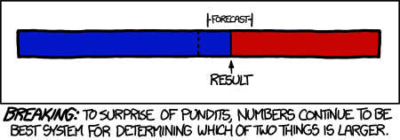

UNIQUE #31403
Professor Anthony Di Fiore
Class: Thursdays, 2-5pm, SAC Room 5.112
Office Hours: Fridays, 2-4pm, SAC Room 4.100H

Overview

This course provides an overview of methods and tools for applied data analysis. It is geared toward research in biological anthropology, but the material covered is applicable to a wide range of natural and social science disciplines. Students will receive practical, hands-on training in various data science workflows, including digital data acquisition and management, exploratory data analysis and visualization, and statistical analysis and interpretation. Statistical topics to be covered include basic descriptive and inferential statistics, hypothesis testing, regression, and general linear modeling, as well as additional specific methods based on student interest (e.g., geospatial data analysis, phylogenetic comparative methods, social network analysis, corpus construction and text mining, population genetic analysis). The course emphasizes the development of data science skills, focusing on the practical side of data manipulation, analysis, and visualization. Students will learn to use the statistical programming language R as well as other useful software tools (e.g., shell scripts, text editors, databases, query languages, and version control systems).
Prerequisites
At least one semester of introductory statistics is recommended. Prior programming experience is not expected, but would be helpful.
Required Text
- Tillman, D. (2016). The Book of R: A First Course in Programming and Statistics. San Francisco: No Starch Press.
Available in print or electronic format from No Starch Press, O'Reilly Media, and Amazon.com.
Optional Text
- Crawley, M. J. (2014). Statistics: An Introduction Using R (Second Edition). Chichester, UK: John Wiley & Sons, Inc.
Assessment
Course grades will be based on attendance and participation in class and on four types of assignments as follows:
- Regular attendance and participation in class - 10%
- Start of class quizzes - 10 x 2%
- Programming problem sets - 6 x 5%
- One individual data analysis replication assignment based on a published paper and dataset chosen in consultation with the instructor - 20%
- One group presentation and written R vignette demonstrating the use of a particular statistical method chosen in consultation with the instructor - 20%
Learning Objectives
By the end of this course, you should:
- be familiar with key concepts and methods in applied data science for acquiring and managing data, conducting exploratory data analyses, testing statistical hypotheses, building models to classify and make predictions about data, and evaluating model performance;
- have a facility with modern tools for data analysis, (e.g., the Unix command line, version control systems, the R programming environment, web APIs) and be able to apply "best practices" in data science;
- know how to interact with both local and remote data sources to store, query, process, and analyze data presented a variety of common formats (e.g., delimited text files, structured text files, various database systems);
- be comfortable writing simple computer programs for data management, statistical analysis, visualization, and more specialized applications;
- know how to design and implement reproducible data science workflows that take a project from data acquisition to analysis to presentation and be able to organize your work using a version control system;
- and be able to apply all of these tools to questions of interest in the natural and social sciences.